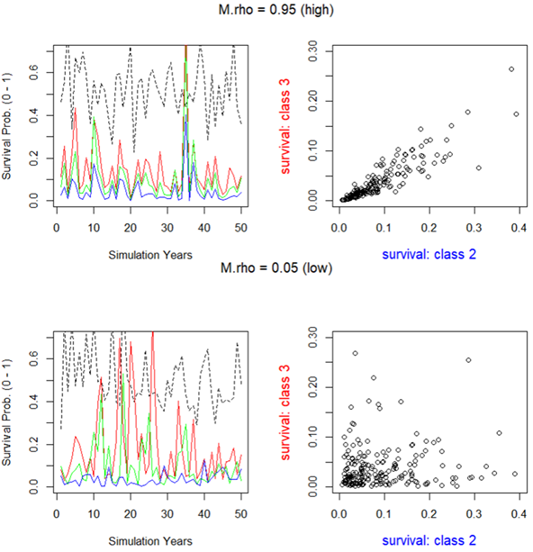

7 Life Cycle Model (Population Model) Overview
7.1 Overview
The integrated life cycle model is a core component of the CEMPRA tool. The life cycle modeling component is a valuable endpoint to evaluate and understand cumulative effects through the lens of demographic rates and population ecology. Some user groups may be satisfied with the simplified Joe Modelling (stressor roll-up) component of the CEMPRA tool and, therefore, not wish to interact with the life cycle model. However, other user groups may benefit substantially from working with the life cycle modeling component. Framing cumulative effects through an integrated life cycle model allows us to understand critical bottlenecks to the productivity and capacity of a target study system. In the CEMPRA life cycle modeling component, stressor-response relationships are linked to vital rates such as life-stage-specific survivorship, fecundity, and carrying capacity. Therefore, the life cycle modeling component can be used to make relative comparisons between locations (spatial units), scenarios, and stressors to understand limiting factors and design recovery action strategies.
At its core, the life cycle modeling component of the CEMPRA tool is a stage-structured matrix model (see (Caswell, 1997)). A simplified life cycle profile csv data input file (described below) is populated by the user and then imported to parameterize and construct components of the matrix model (e.g., number of stages, stage-specific survivorship, years in each stage, etc.).
When the life cycle model is run, a hypothetical population is projected forward in time through simulations. The stage-structured matrix model governs the behavior of the simulated population. Density-dependent growth constraints are implemented using either compensation ratios (if the location and stage-specific capacities are unknown) or location and stage-specific Beverton-Holt functions (discussed further in Habitat & Stressors). Location-specific stressor values will interact with the simulated population to curtail or enhance stage-specific survivorship, fecundity, or habitat capacities. Population projections are then compared across scenarios and/or locations to evaluate the relative change in equilibrium abundance estimates for a target life stage (i.e., carrying capacities) and/or the intrinsic productivity (i.e., growth rates) possible at low densities.
The life cycle modeling component of the CEMPRA tool performs a large number of calculations behind the scenes. While convenient, the embedded complexity can create misleading results if input values and assumptions are not carefully considered. It is assumed that users of the life cycle model have an understanding of basic concepts in population ecology (e.g., population growth rates, carrying capacities etc.) and a familiarity with matrix life cycle models. The following resources provide useful refreshers for interested individuals:
- Basic refresher on matrix life cycle models: https://compadre-db.org/Education/article/what-is-a-matrix-model
- An in-depth overview of stage-structured matrix models: https://blog.uvm.edu/tdonovan-vtcfwru/files/2020/06/12-Donov-pages-322-CB.pdf
- Density-dependent and density-independent constraints on population growth: https://www.nature.com/scitable/knowledge/library/population-limiting-factors-17059572/
- Density-dependent growth functions (review section on the Beverton-Holt function): http://courses.ecology.uga.edu/ecol4000-fall2018/wp-content/uploads/sites/22/2018/08/Chapter-3-complex-dynamics.pdf
The model code for the life cycle modeling component of the CEMPRA tool follows a similar structure to the code base used by (Van der Lee & Koops, 2020). The underlying code and assessment framework was modified substantially by Dr. Kyle Wilson and Matthew Bayly (M.J. Bayly Analytics Ltd.) throughout 2022 and 2024. Code snippets, functional forms, and rationale largely follow conventional workflow demographic modeling outlined in (Schaub & Kéry, 2021). For anadromous life cycles with terminal spawners classes, matrix structures follow the generalized design proposed by (Davison & Satterthwaite, 2016). Users are encouraged to review these resources for additional background and rationale.
7.2 Data Input: Life Cycle Profiles
7.2.1 Purpose
The life cycle profile is the main input file for the life cycle model. It provides the names and values of key life cycle parameters and vital rates, including parameters for survival, growth, reproduction, and density-dependent effects. This file makes it easy for users to store and edit life cycle parameter values either within or outside of the R Shiny web application. The following sections break down the components of the life cycle profile file with illustrative examples. The intent of the following sections is to provide a detailed explanation of how the life cycle model works with a description of each component of the input file so that users may create their own life cycle profile for a target species of interest.
7.2.2 Layout
The life cycle profile is a comma-separated values (CSV) file that contains the names and values of each of the parameters within the life cycle model. Life cycle profiles will be unique to each species or life history variant. The life cycle profile file contains three columns:
- Parameters: The full name/description of the parameter. This column can be adjusted by the user to provide more relevant nicknames for each stage (e.g., fry survival, smolt survival etc.). Please update and change these values for your study system.
- Name: The short form name of the parameter used in the model. The names of these parameters are referenced by the model code and should not be modified (apart from adding or removing stage classes). Feel free to add or remove rows, depending on the number of stages, but do not change the text in this column.
- Value: The numeric value of the parameter used in the model. The values are adjusted for each species profile.
The following table shows an example life cycle parameters file for Athabasca Rainbow Trout (non-anadromous).
| Parameters | Name | Value |
|---|---|---|
| Number of life stages | Nstage | 4 |
| Anadromous | anadromous | FALSE |
| Adult capacity | k | 100 |
| Spawn events per female | events | 1 |
| Eggs per female spawn | eps | 3000 |
| spawning interval | int | 1 |
| egg survival | SE | 0.1 |
| yoy survival | S0 | 0.3 |
| sex ratio | SR | 0.5 |
| Hatchling Survival | surv_1 | 0.3 |
| Juvenile Survival | surv_2 | 0.3 |
| Sub-adult Survival | surv_3 | 0.9 |
| Adult Survival | surv_4 | 0.9 |
| Years as hatchling | year_1 | 1 |
| years as juvenile | year_2 | 2 |
| years as subadult | year_3 | 2 |
| years as adult | year_4 | 5 |
| egg survival compensation ratio | cr_E | 1 |
| yoy survival compensation ratio | cr_0 | 3 |
| hatchling survival compensation ratio | cr_1 | 2.5 |
| juvenile survival compensation ratio | cr_2 | 2 |
| subadult survival compensation ratio | cr_3 | 1.1 |
| adult survival compensation ratio | cr_4 | 1 |
| maturity as hatchling | mat_1 | 0 |
| maturity as juvenile | mat_2 | 0 |
| maturity as subadult | mat_3 | 0 |
| maturity as adult | mat_4 | 1 |
| variance in eggs per female | eps_sd | 1.00E+03 |
| correlation in egg fecundity through time | egg_rho | 0.1 |
| coefficient of variation in stage-specific mortality | M.cv | 1.00E-01 |
| correlation in mortality through time | M.rho | 0.1 |
7.3 Matrix Life Cycle Model
The stage-structured matrix modelling framework, embedded within the CEMPRA tool, can be represented graphically by a life cycle diagram or a transition matrix. The transition matrix can be represented symbolically with equations or with numerical values (see the Matrix Representations section below). The structure of the life cycle diagram and transition matrix will be different depending on whether the anadromous input is set to TRUE (for anadromous/semelparous life histories e.g., salmon) or FALSE (for non-anadromous/iteroparous life histories e.g., most trout and char).
The life cycle diagram figure (below) shows stage class transitions for Athabasca Rainbow Trout. In the diagram and input file, we see that there are four main stages (stage_1 to stage_4). stage_1 individuals can become stage_4 individuals after three years in the simulation, but it is also possible for some individuals to spend more than one year in stages 2, 3, and 4 (denoted by the circular loop). We also see that stage_4 individuals are sexually mature and have the capacity to generate new stage_1 individuals. There are also special year 0 (Age-0) events that occur before new stage_1 (Age-1) individuals are secured in the simulation. These events include egg survival (SE) and Age-0 fry survival (S0).

The life cycle modelling component of the CEMPRA tool is set up as a pre-birth pulse census (see Caswell 2000). Since the design of stage-structured matrix models does not easily allow for the initial number of eggs and fry to be represented as independent matrix elements (cells), their transitions are included within the fecundity term. In a pre-birth pulse census, we assume that the demographic census takes place immediately before spawning (fecundity), meaning that yearlings of the previous spawning year have survived a full time-step (Age-0/stage-0 to Age-1/stage-1). Yearlings (Age-0: egg & fry) must survive the entire census period to the start of the next census. Therefore, the Age-0 transitions (egg-to-fry survivorship: SE and fry-to-parr survivorship: S0) are accounted for within the fecundity element (cells) of the transition matrix (Table 1).
7.3.1 Anadromous Life Histories
| Parameter | Name | Value |
|---|---|---|
| Anadromous | anadromous | TRUE |
For semelparous species (such as salmon) we need to impose a slightly different structure to accurately represent a terminal spawner class (B) with death upon reproduction. This can become challenging because we need to also account for the fact that some species such as Coho Salmon, Chinook Salmon, Steelhead etc. will choose to return to spawn at different ages. For example, some Chinook Salmon will return to spawn at age-3, age-4, or age-5 (and sometimes even later). Therefore, the matrix structure needs to represent a dual track for breeders (B) that return to spawn and pre-breeders (P) that remain at sea (or elsewhere) for continued growth. Elegant solutions have been proposed by (Davison & Satterthwaite, 2016) (and others) to achieve this.
The diagram below illustrates the anadromous life history diagram for Chinook Salmon. In this diagram, there are two pathways available to individual age-2 fish transitioning to age-3 fish. Individuals may return for spawning as breeders (B) (orange boxes) or remain in the marine environment as pre-breeders (Pb) (light blue boxes) for additional years. Pre-breeder (Pb) age classes can have interannual survivorship estimates >0 (to advance fish to older age classes) but all spawner classes (B-breeders) will die after spawning. The probability of becoming a spawner (at age 3-5) will depend on the portion that become mature at each age class (mat_x). For example, the transition from age-2 (Pb - prebreeders) to age-3 spawners (B - breeders) will be expressed as the baseline marine survivorship from age-2 to age-3 (surv_2) multiplied by the portion of fish that spawn at age-3 (mat_3). Additional migratory mortality for age-3 fish returning to spawn can expressed as (smig_3). Alternatively, age-2 fish can remain at sea for another year to enter the age-3 pre-breeder marine class (stage_Pb_3). This marine transition (stage_Pb_2 to stage_Pb_3) will be expressed as the baseline age-2 to age-3 marine survivorship (surv_2) * the portion of fish that do not spawn at age-3 (1 – mat_3). The cycle repeats itself until the final transition from age-4 to age-5. We assume that age-5 is the maximum possible age any fish can achieve. mat_5 is set 1.0 (100% of remaining individuals return to spawn). No fish will enter into the class (stage_Pb_5 – not shown). We can also set surv_5 to 0, but doing so is not necessary if mat_5 is set to 1.0.
Recruitment of one-year-old fish (stage_Pb_1) is a function of the number of spawners of a given age class (e.g., stage_B_x) multiplied by the average pre-spawn mortality of that age class (u_x), the average fecundity (eggs per female spawner, eps) for that age class (eps_x), the sex ratio (portion female, SR), the average egg survivorship (SE), and finally the average fry survivorship (S0). We can assume the spawning events (events) and interval (int) are both set to 1.0. Therefore, the number of stage_Pb_1 recruits from age-3 spawners would be expressed as (μ_3 * events * eps_3 * SE * s0 * SR)/int.
This diagram can be restructured for Coho, Steelhead, Coastal Cutthroat etc. by adjusting vital rates and then adding or removing age class maturity schedules (see examples at the end of this chapter). We strongly recommend that all implementations of the CEMPRA anadromous life cycle model for salmon develop an age-based matrix model (Leslie Matrix Models) as a opposed to a stage-based matrix model. We have found that these are less prone to misinterpretations and easier to diagnose.

7.3.2 Vital Rates for Survivorship and Growth
The CEMPRA tool’s “pre-birth pulse” census assumes that the demographic census occurs just before spawning. This means that individuals counted as yearlings (from the previous spawning season) have already survived one full time-step—from birth (Age-0/Stage-0) to Age-1/Stage-1.
During the first year, two survival rates apply:
SE: Egg survivorship. S0: Sub-yearling (fry) survivorship. Their product (SE × S0) represents the overall early-life survival from egg to age-1. Note that there is no surv_0 parameter in the life cycle profile — instead, SE and S0 are specified separately and their combined effect is folded into the fecundity terms of the transition matrix.
Once individuals reach Age 1 (Stage 1), the parameter surv_1 governs the density-independent transition to Stage 2. For most anadromous species, which migrate to sea shortly after spawning, surv_1 should be calculated as the product of smolt survivorship and the survival rate during the first several months at sea (up to the individual’s second birthday). For species/life histories that reside in the freshwater environment for longer (e.g., Coho & stream-type Chinook), surv_1 can be adjusted to represent yearling/parr survivorship.
The following table lists the vital rates for survivorship and growth:
| Parameter | Description |
|---|---|
| Nstage | The number of stages in the transition matrix (excluding Stage-0/Age-0). For non-anadromous species: Each stage must span one or more years in the life cycle. In the reference example, there are four stages: stage_1, stage_2, stage_3, and stage_4. For anadromous species, each year is one stage (age-based Leslie matrix). Set Nstage to the maximum age (e.g., 5 for Chinook spawning up to age 5). The model determines pre-breeder (Pb) stages from non-zero surv_X values and adds breeder (B) columns for each age with mat_X > 0. Do not double-count spawning/non-spawning sub-classes. Example: surv_1–surv_4 > 0 with mat_3, mat_4, mat_5 > 0 produces a 7×7 matrix (4 Pb + 3 B). | |
surv_1 surv_2 surv_3 surv_… |
Mean annual survivorship for each stage transition (e.g., surv_1 is the survival probability for transitioning from stage 1 to stage 2; surv_2 is the survival from stage 2 to stage 3). | Create new rows in the life cycle parameter csv file so that surv_1, surv_2, surv_3, etc. extends to the Nstage. Similarly, delete rows if Nstage is lower than the default csv file. These survivorship estimates should be estimates of intrinsic density-independent survival (in the absence of density-dependent constraints). |
year_1 year_2 year_3 year_… |
The number of years spent in each stage (e.g., year_2 is the number of years spent in stage class 2). Usually these values will all be 1 (one stage = one year). However, for non-anadromous species, individuals can spend more than one year in each stage. When year_X > 1, the matrix splits survival into stage-staying vs stage-advancing probabilities. Setting all year values to 1 gives an age-based Leslie matrix. For anadromous species, year_X should always be 1. Add or remove rows to match Nstage. | |
| SE | Egg survivorship (density-independent). |
| S0 | Age-0 fry or sub-yearling survivorship (density-independent). |
Table: Vital rates for survivorship and growth in the life cycle model.
Ensure that all survivorship estimates represent hypothetical density-independent survivorship in the absence of density-dependent constraints. Density-dependent survivorship is accounted for in the next section. If density-independent survivorship is unknown, but strong, density-dependent constraints are to be included in the species profile, then it might be possible to simply set the density-independent survivorship estimate to a value close to 1.0 (e.g., S0: 0.999).
For fecundity, we have to consider the proportion of each age class that is sexually mature (mat), the proportion of the population that is female (SR: 0.5), the fecundity (eps: eggs per spawner) per spawning event, the spawning events per year (events), and the spawning interval (int). The calculation of individuals in stage class 1 (stage_1) also must account for the Age-0 survivorship of eggs and fry.
Sample fecundity function for stage class 4:

7.3.3 Vital Rates for Fecundity
The following table lists the vital rates for fecundity:
| Parameter | Description |
|---|---|
mat_1 mat_2 mat_3 mat_… (1 to Nstage) |
The proportion of each stage class that is sexually mature (0 – 1). For example, in the demo species profile, 100% of the individuals become sexually mature at stage class 4, and the sexual maturity is 0% for all other stage classes. It is also possible for a stage class to have partial maturity (e.g., 0.85). If the Nstage value is different than four, then add or remove rows in the species profile so that the number of mat values matches the number of stage classes (Nstage value). Anadromous simulations: For some anadromous species such as Chinook salmon, individuals will generally return to spawn between age-3 and age-6. Different populations will have different maturity schedules (e.g., 15% age-3, 70% age-4, 100% age-5 etc.). These values do not need to sum to 100% but age-specific maturity is simply the probability that an individual will become sexually mature and return to spawn at a given age. For anadromous species the oldest age class should have a maturity of 100%, meaning that 100% of individuals at that age class will be ready to spawn. |
| events | Spawning events per female per year. This parameter will almost always be set to 1 for most species to indicate one spawning event per year per mature female. Even for populations with complex life history variants (e.g., systems with both Spring Chinook & Fall Chinook), we still recommend keeping this value at one and using two different species profiles to represent each life history variant. |
Fixed Fecundity: eps Stage-specific Fecundity (anadromous): eps_3 eps_4 eps_5 eps_… |
Eggs per spawning female (eps). The mean fecundity per female per spawning event. Anadromous simulations: For most species we can simply enter an estimate of the mean eggs per female spawner as a fixed global value (e.g., 500 eggs/spawner). However, for some species we may wish to enter in a separate fecundity value for each stage/age class (e.g., Age-3 spawners, eps_3: 3,700; Age-4 spawners, 4,200 eggs/spawner; Age-5 spawners, 5,000 eggs/spawner). If you choose to enter in age/stage-specific fecundity estimates please delete the row for ‘eps’. If you choose to enter in a fixed global fecundity then delete the age-specific fecundity estimates. Currently age-specific fecundities only works for anadromous simulations. |
| SR | The sex ratio is represented as the proportion of the population that is female. This value will almost always be set to 0.5 to indicate an equal proportion of males and females in the population. |
| int | Spawning interval (in years). This value will also be set to 1 for most species, indicating that mature individuals spawn each year. Proceed with caution if you choose to use a value other than 1 for this input (see details in formulas). |
smig_3 smig_4 smig_5 … |
(Spawner migration Survivorship Rates: Anadromous simulations only) Spawner migration survivorship rates for each age class. For example, smig_4 is migratory survivorship for age-4 spawners. These parameters act as a survivorship multiplier. If the spawner migration mortality is 10% then smig_4 should be input as 0.9 (1 - 0.1). These values can be set to 1.0 for initial model setup. Similar to other input parameters check the Nstage value and add or remove rows so that smig_3, smig_4, smig_5 entries are present for each of the mature age classes (anywhere where mat_x is set and is greater than zero). |
u_3 u_4 u_5 u_… |
(Prespawn Survivorship Rates: Anadromous simulations only) Prespawn survivorship rates for each age class. For example u_4 is pre-spawn survivorship for age-4 spawners. These parameters act as a survivorship multiplier. If the prespawn mortality is 10% then u_4 (prespawn survivorship) should be input as 0.9 (1 - 0.1). These values can be set to 1.0 for initial model setup. Similar to other input parameters check the Nstage value and add or remove rows so that u_3, u_4, u_5 entries are present for each of the mature age classes (anywhere where mat_x is set and is greater than zero). |
Table: Vital rates for fecundity in the life cycle model.
7.3.4 Notes on Spawner Migration Survival vs. Pre-Spawn Survival
In the population model, users are given the option to modify spawner migration survival (smig_x) and pre-spawn survival (u_x) separately. These values are usually set to 1.0 (no additional effect). However, their exact specificity becomes useful when specific stressors need to be linked to specific life stage events. For example, for many salmon populations high stream temperatures may result in direct mortality prior to spawning. Additionally, fishing mortality may limit survivorship for fish before entering the freshwater environment.
Deciding whether or not to (a) include stressors like these and (b) exactly which life stage to link them to is left up to the modeller. However, separating spawner migration survival and pre-spawn survival can be useful when comparing model results to external real-world datasets for validation. Many salmon enumeration and monitoring programs count “returns” or “escapement + harvest”, but these numbers do not directly translate to effective spawners.
In the population model, mortality from spawner migration survival (smig_x) occurs before the adult (spawner) census but before spawning, and pre-spawn survival (u_x) occurs after spawner enumeration but before spawning. Effective spawners in the model can be roughly calculated as spawner abundance × u_x. Therefore, stressors that occur before real-world enumeration should be linked to smig_x, and stressors that occur after adult enumeration (in the real world) should be linked to u_x.
7.4 Matrix Representations
7.4.1 Iteroparous (Non-anadromous) Species
We can combine all parameters discussed in this section along with the example species profile to construct a symbolic (mathematical) representation of the transition matrix (Table 1). The stage-to-stage transitions account for the probability of staying within each stage or advancing to the next stage based on the surv_X and n-year spent within a stage year_X. The fecundity element of the matrix (top row) includes elements for fecundity and Age-0 survivorship.
Table 1. Symbolic Representation of the Transition Matrix for non-anadromous species
| =============== stage_1 | stage_1 | stage_2 | stage_3 | stage_4 | =====================================================================+======================================================================+======================================================================+===============================================+ surv_1 * (1 - surv_1^( year_1 - 1))/(1 - surv_1^ year_1) | (mat2 * events * eps * sE * s0 * sR)/int | (mat3 * events * eps * sE * s0 * sR)/int | (mat4 * events * eps * sE * s0 * sR)/int | | ||||
| stage_2 | surv_1 - surv_1 * (1 - surv_1^(year_1 - 1))/(1 - surv_1^ year_1) | surv_2 * (1 - surv_2^( year_2 - 1))/(1 - surv_2^ year_2) | 0 | 0 | |
| stage_3 | 0 | surv_2 - surv_2 * (1 - surv_2^( year_2 - 1))/(1 - surv_2^ year_2) | surv_3 * (1 - surv_3^( year_3 - 1))/(1 - surv_3^ year_3) | 0 | |
| stage_4 | 0 | 0 | surv_3 - surv_3 * (1 - surv_3^( year_3 - 1))/(1 - surv_3^ year_3) | surv_4 * (1 - surv_4^( year_4 - 1))/(1 - surv_4^ year_4) | |
Reading the matrix — a guide for new users
The matrix has three structural zones:
- Top row (fecundity): Only columns corresponding to mature stages have non-zero entries. These convert mature individuals back into new stage-1 recruits, incorporating egg survival (
sE), fry survival (s0), sex ratio (sR), maturity (mat_X), fecundity (eps), and spawning parameters. Columns for immature stages are zero because those stages do not reproduce. - Diagonal (stage-staying): The probability that an individual survives and remains in the same stage for another year. This is only non-zero when
year_X > 1(i.e., the stage spans multiple years). The formulasurv_X * (1 - surv_X^(year_X - 1)) / (1 - surv_X^year_X)calculates the staying probability. Ifyear_X = 1, the diagonal is zero and all survivors advance. - Sub-diagonal (stage-advancing): The probability that an individual survives and advances to the next stage. Calculated as the complement:
surv_X - (staying probability). The staying and advancing probabilities always sum to exactlysurv_X.
Do individuals spend more than one year in each stage?
The stage-to-stage transition probabilities are expressed as functions of surv_X (annual survivorship within stage X) and year_X (number of simulation years within stage X). surv_X is the total annual probability of survival (i.e., regardless of staying within the current stage OR advancing to the next subsequent stage). The example below illustrates how the combined probability of staying within a stage or advancing to the next stage always equals surv_X regardless of n-years in each stage. Note that the sum of the yellow cells equals 0.6 (for both fates of staying within stage or advancing to the next stage).

We can continue with the working example to represent the transition matrix numerically (Table 2). The fecundity element for stage_4 is set at 45 since it accounts for the vital rates relating to maturity and Age-0 survivorship.
Net Fecundity (stage-4) = (mat4 * events * eps * sE * s0 * sR)/int
45 = (1 * 1 * 3,000 * 0.1 * 0.3 * 0.5)/1
Table 2. Numerical representation of the transition matrix
| stage_1 | stage_2 | stage_3 | stage_4 | |
|---|---|---|---|---|
| stage_1 | 0 | 0 | 0 | 45 |
| stage_2 | 0.3 | 0.231 | 0 | 0 |
| stage_3 | 0 | 0.069 | 0.474 | 0 |
| stage_4 | 0 | 0 | 0.426 | 0.756 |
The derived lambda value of the projection matrix (intrinsic rate of growth) in this example species profile is 1.21 (above 1.0), meaning that the population will continue to grow exponentially in the absence of density-dependent constraints.
7.4.2 Semelparous Species (‘anadromous’ Model Runs)
For anadromous (semelparous) species such as Pacific salmon, the matrix structure differs from iteroparous species. Because individuals die after spawning, the matrix must distinguish between non-spawning pre-breeder (Pb) stages and terminal breeder (B) stages. Each spawning age class appears as a separate breeder column rather than being folded into a single adult stage with maturity probabilities. The example below illustrates a Chinook Salmon population that can spawn at ages 3, 4, or 5 (i.e., after 2, 3, or 4 years of freshwater and ocean rearing as pre-breeders).
Symbolic Representation of the Transition Matrix (B) — Chinook Salmon (spawning ages 3–5)
| Stage Pb 1 | Stage Pb 2 | Stage Pb 3 | Stage Pb 4 | Stage B 3 | Stage B 4 | Stage B 5 | |
|---|---|---|---|---|---|---|---|
| Stage Pb 1 | 0 | 0 | 0 | 0 | (u3 * events * eps3 * sE * s0 * sR) / int | (u4 * events * eps4 * sE * s0 * sR) / int | (u5 * events * eps5 * sE * s0 * sR) / int |
| Stage Pb 2 | s1 | 0 | 0 | 0 | 0 | 0 | 0 |
| Stage Pb 3 | 0 | s2 * (1 - mat3) | 0 | 0 | 0 | 0 | 0 |
| Stage Pb 4 | 0 | 0 | s3 * (1 - mat4) | 0 | 0 | 0 | 0 |
| Stage B 3 | 0 | s2 * mat3 * smig3 | 0 | 0 | 0 | 0 | 0 |
| Stage B 4 | 0 | 0 | s3 * mat4 * smig4 | 0 | 0 | 0 | 0 |
| Stage B 5 | 0 | 0 | 0 | s4 * mat5 * smig5 | 0 | 0 | 0 |
Key structural differences from the non-anadromous matrix:
- No diagonal entries: Because anadromous species use age-based (Leslie) matrices with
year_X = 1, there is no stage-staying — every individual either advances or dies. All diagonal entries are zero. - No B-to-B or B-to-Pb transitions: Breeder stages are terminal. All entries in the B columns (except the fecundity row) are zero because spawners die after reproduction.
- Maturity split: At ages where spawning is possible, the sub-diagonal splits into two rows — one for pre-breeders (non-maturing) and one for breeders (maturing and migrating). This is unique to the anadromous matrix.
- Fecundity only from B columns: Only breeder (B) stages produce offspring. The Pb columns of the fecundity row are zero.
Understanding the fecundity row (top row)
The top row of the matrix converts spawners back into new stage-1 recruits. For example, the entry for Stage B 4 is:
(u4 * events * eps4 * sE * s0 * sR) / int
This reads as: prespawn survival for age-4 spawners (u4 — the fraction that survive to actually spawn after arriving on the spawning grounds), multiplied by the number of spawning events per female (events), multiplied by eggs per age-4 female (eps4), multiplied by egg survival (sE), multiplied by fry survival to first August (s0), multiplied by the sex ratio / proportion female (sR), divided by the spawning interval (int). The result is the number of new stage-1 recruits (not eggs, not fry) produced per age-4 spawner. This is because the pre-birth-pulse census counts individuals only after they have survived the egg and fry stages.
Understanding the maturity split (pre-breeder vs breeder)
At each age where spawning is possible, the matrix splits the surviving population into two fates. Consider a stage-2 (age-2) fish. If mat3 = 0.3 (30% of age-3 fish mature), then:
- Stage Pb 3 receives
s2 * (1 - mat3)= the fraction that survives and remains as a non-spawning pre-breeder (70% of survivors continue rearing). - Stage B 3 receives
s2 * mat3 * smig3= the fraction that survives, matures, and successfully migrates to spawn (smig3is the migration survival probability for age-3 spawners).
Together, these two entries partition all surviving stage-2 fish into one of two fates. Note that if smig3 < 1.0 (i.e., some fish die during migration), the two terms will not perfectly sum to s2 — the difference represents migration mortality for maturing fish.
Eggs and fry are embedded in the fecundity formula
Unlike some matrix formulations, eggs and fry do not appear as separate rows or columns in the anadromous transition matrix. The egg stage (governed by sE) and the fry stage (governed by s0) are folded into the top-row fecundity terms (uX * events * epsX * sE * s0 * sR) / int. This means the matrix directly projects from spawners to stage-1 recruits in a single step. Density-dependent constraints on eggs or fry (e.g., bh_stage_0, hs_stage_0) are applied outside the matrix projection as a separate post-projection adjustment (see the Density-Dependent Constraints section below).
7.5 Stochastic Simulations
Several additional parameters are available to influence the stochasticity (variability) of the population projections. Implementing these parameters is useful for understanding the viability of the population and (over many simulations) estimating the number of batch replicates that fall below a given critical threshold (e.g., X adults).
7.5.1 eps_sd: Standard Deviation in Eggs-per-Spawner
| Parameter | Description |
|---|---|
eps_sd |
The Standard Deviation in Eggs-per-Spawner controls the variability in fecundity across simulation years and batch replicates. The example below shows a sample projection with eps_sd set to 250 and 750. In the example with eps_sd set to 750, there are several years with very high fecundity. Density-dependent constraints (if implemented) may attenuate the apparent effect of high eps_sd inputs. |

eps_sd Standard Deviation in Eggs-per-Spawner
7.5.2 egg_rho: Correlation in Egg Fecundity Through Time
| Parameter | Description |
|---|---|
egg_rho |
In natural populations, there will be good years and bad years. It’s assumed that good years will be good for large adults and small adults. If multiple mature stage classes contribute to spawning (fecundity) (i.e., maturity values are greater than 0), it is assumed that fecundity will be correlated between good and bad years across stage classes (i.e., stage_5, stage_6 & stage_7). egg_rho controls the degree of correlation in interannual fecundity between stage classes. See the following figure for an illustrative example. If egg_rho is low, and multiple stage classes contribute to spawning, then some stage classes may compensate for good/bad years. Conversely, if egg_rho is high, then the population may be highly volatile as all cohorts experience good/bad years simultaneously. |

egg_rho: correlation in egg fecundity through time
7.5.3 M.cv: Coefficient of Variation (CV) in Interannual Stage-Specific Mortality
| Parameter | Description |
|---|---|
M.cv |
The Coefficient of Variation (CV) in stage-specific mortality (M.cv) is based on a beta distribution. This parameter allows for the modeling of variability in mortality rates across different life stages, contributing to a more dynamic and realistic simulation of population dynamics. |
7.5.4 M.rho: Correlation in Stage-Class Mortality Through Time
| Parameter | Description |
|---|---|
M.rho |
M.rho, the correlation in mortality through time, plays a critical role in modeling the variability of survivorship across life stages. In natural populations, the occurrence of good and bad years is often correlated across all stage classes, excluding eggs (SE). M.rho determines the degree of this correlation. A low M.rho value suggests that certain stage classes may compensate for good/bad years based on random sampling of survivorship, while a high M.rho implies that all cohorts may experience good/bad years simultaneously, leading to higher volatility in population dynamics. |

M.rho: correlation in survivorship through time
7.5.5 p.cat: Probability of Catastrophe per Generation
| Parameter | Description |
|---|---|
| p.cat | p.cat represents the Probability of Catastrophe per Generation. This parameter is scaled to the average generation time of the population, reflecting the annual probability of a catastrophic event occurring. It’s a critical factor in assessing the resilience and long-term sustainability of a population under varying environmental and anthropogenic pressures. |

p.cat: Probability of Catastrophe per Generation
Leave questions and comments below (via your GitHub account)